Our lab uses molecular simulation, information theory, and machine learning to understand and design functional soft materials, with global sustainability and health challenges in mind. We are especially drawn to molecular organization that is hard to characterize (whether from disorder, irregularity, or the lack of an obvious order parameter) and to finding new ways to measure and tune that organization in service of function.
Research
Quantifying Molecular Order from Information
We measure the intrinsic organization of molecular systems directly from configuration and trajectory data, drawing on information theory to capture order even when it isn't obvious to the eye or expressible as a conventional order parameter. We are exploring how such measures might serve as design variables for tuning molecular assemblies.
Soft Materials for a Sustainable Environment
We design peptide-based materials that selectively bind pollutants, with a current focus on sensing and capturing nanoplastics from water.
Biomolecular Recognition and Assembly
We investigate the forces that drive binding and aggregation in biomolecular systems. We are especially interested in how assembly is shaped by disordered or irregular targets (e.g., nanoparticle surfaces, aggregation-prone proteins) and how those interactions influence function.
Upcoming
Team
Principal Investigator
Ashley Guo
Assistant Professor, Department of Chemical & Biochemical Engineering
Email: ashley.guo [at] rutgers [dot] edu
Office: Engineering C-164
PhD Students
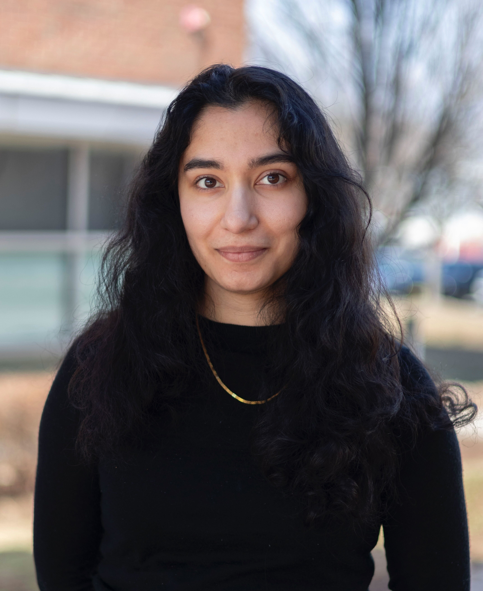
Mansi Gokani
NIH Biotech Training Fellow, 2024-
B.S. Chemical Engineering, University of Washington, 2023
mg1992 [at] rutgers [dot] edu
Benjamin Borow
M.S. Chemical and Biochemical Engineering, Rutgers University–New Brunswick, 2024
B.S. Biomedical Engineering, Rutgers University–New Brunswick, 2023
bb569 [at] rutgers [dot] edu
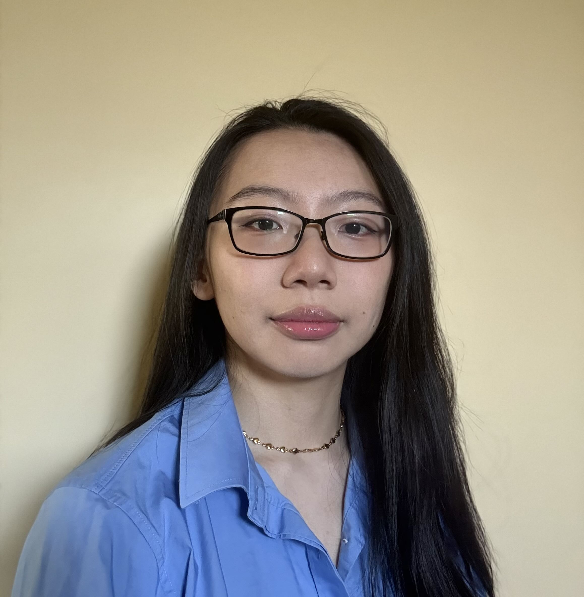
Kaelyn Chang
B.S. Chemical and Biochemical Engineering, Rutgers University-New Brunswick, 2025
kc1228 [at] rutgers [dot] edu
Undergraduate Researchers
Brianna Fea
2024-2025 Aresty Research Assistant
Rutgers CBE c/o 2027
bzf1 [at] rutgers [dot] edu
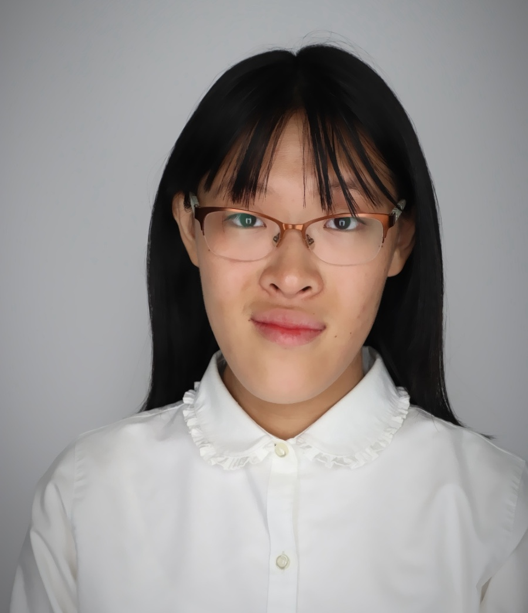
Jean Chen
2025-2026 Aresty Research Assistant
Rutgers CBE c/o 2028
jc3188 [at] rutgers [dot] edu
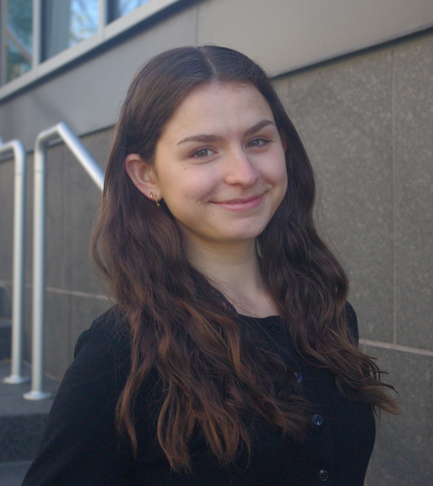
Sophia Carlson
2026-2027 JJ Slade Scholar
Rutgers CBE c/o 2027
sac457 [at] rutgers [dot] edu
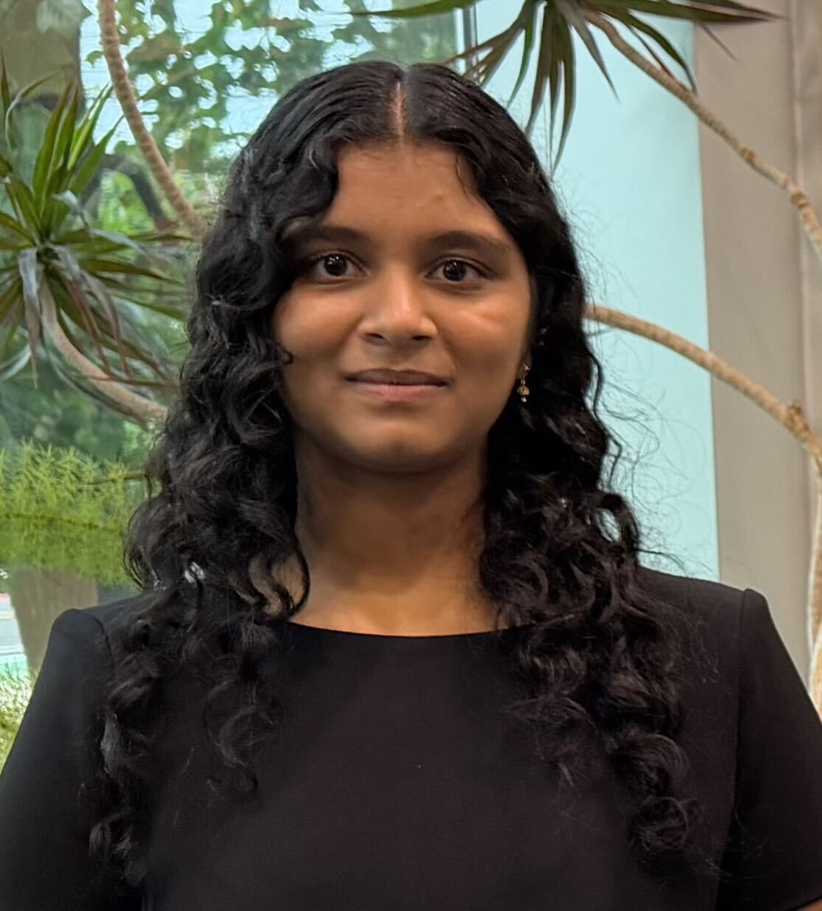
Laasya Chintala
2026 Aresty Summer Science Student
Rutgers Biological Sciences c/o 2029
lc1414 [at] rutgers [dot] edu
Lab Alumni
Bisneili Amaya (U. of Notre Dame CBE), summer visiting undergraduate, 2026
Samiyah Siddiqui, graduate research assistant, 2024-2025
Julietta Straviou (Georgia Tech CBE), summer visiting undergraduate, 2025
Prospective Students
We are seeking curious and motivated students who are interested in data- and information-driven modeling of biomolecules, polymers, and colloids. Students should have a strong background and interest in the physical sciences and mathematics. Previous experience in computer programming or molecular simulation is helpful but not required.
Current and prospective Ph.D. students are encouraged to contact Prof. Guo directly to discuss potential opportunities and research interests. Prospective graduate students should apply to the Rutgers CBE program.
Highly motivated undergraduates are welcome to inquire about opportunities by (1) emailing Prof. Guo with a copy of their resume and details on their relevant coursework, or (2) applying through the Aresty Research Center. We appreciate the recent influx of high schoolers interested in doing research with us; high school researchers must join the lab through organized programs so that they can receive sufficient mentorship and structure. Undergraduates and high school researchers are expected to attend weekly group meetings and actively contribute to them.
News
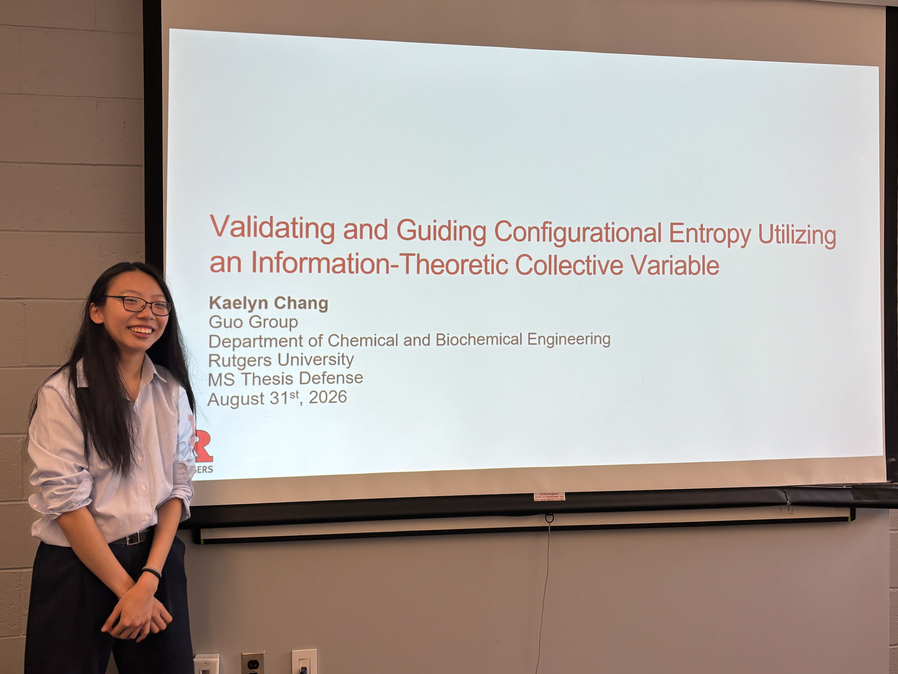
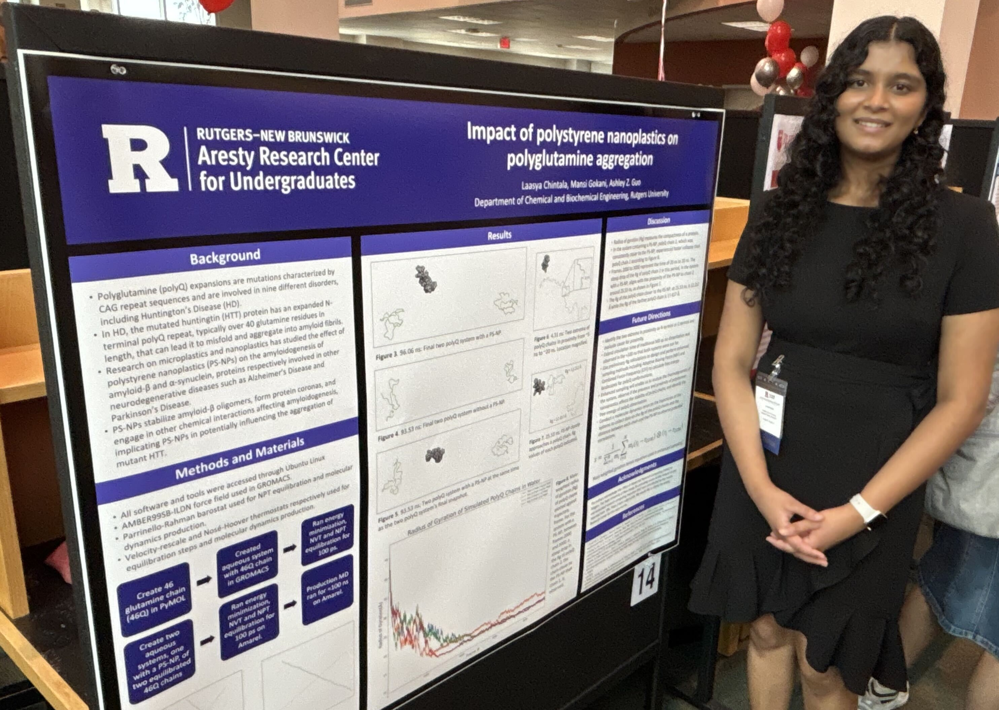
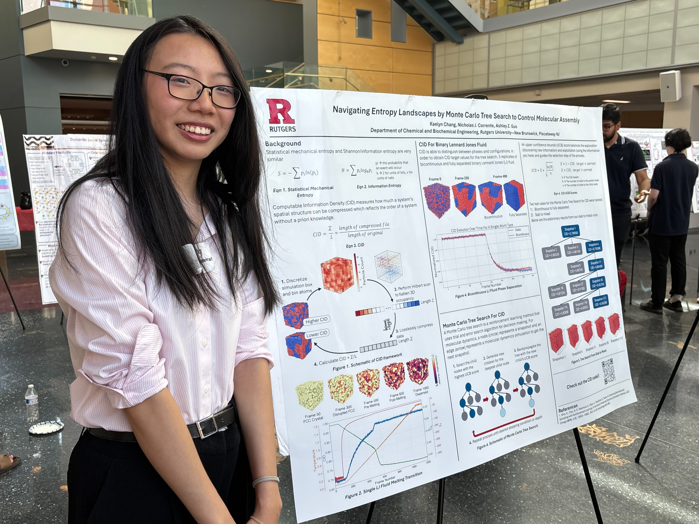
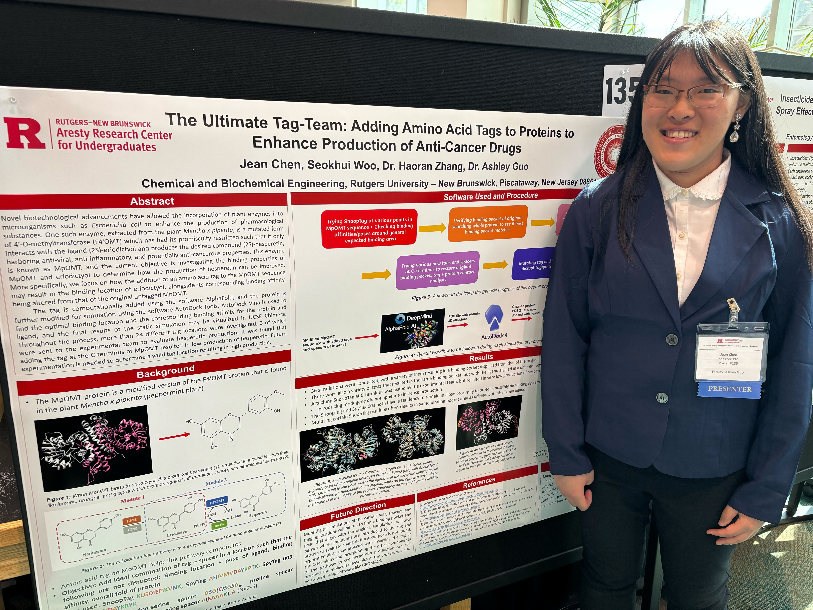
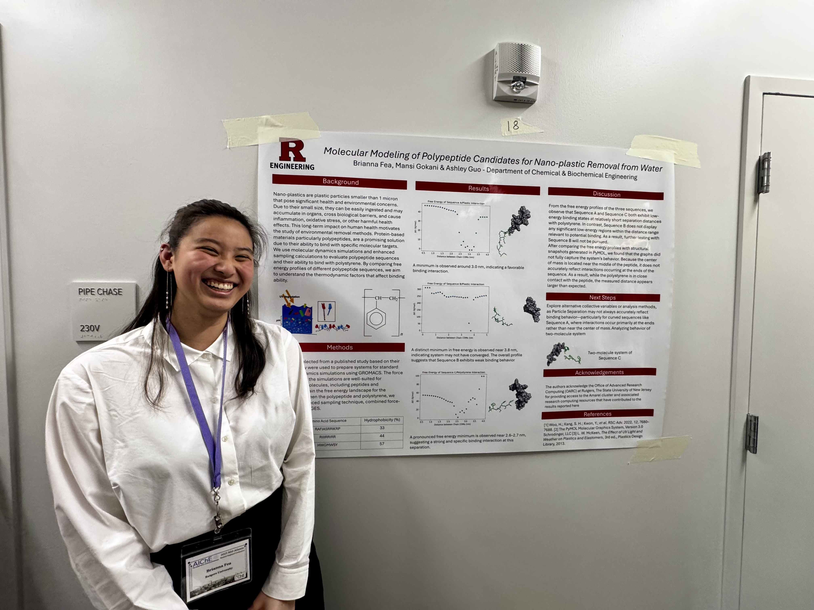
Bri at AIChE Mid-Atlantic Student Regional Conference

Last full-house group meeting of 2024
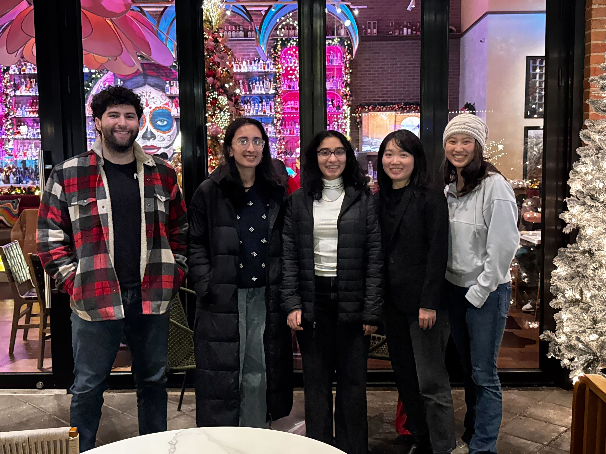
Group dinner
Publications
* denotes equal contribution; † denotes corresponding author
An information-theoretic collective variable for configurational entropy
Molecular Systems Design & Engineering (2026)
DOI: 10.1039/D6ME00083EWIP: Development of a Chemical Engineering Activity for First-Year Engineering Students
ASEE (2026)
DOI: 10.18260/1-2--60886Diffusion in Nonequilibrium Two-Dimensional Crystals
Physical Review E (2026) 113:044108
DOI: 10.1103/qqhm-98vnDynamical Approach to the Jamming Problem
Physical Review Letters (2023) 131:238202
DOI: 10.1103/PhysRevLett.131.238202Harnessing Peptide Binding to Capture and Reclaim Phosphate
J. Am. Chem. Soc. (2021) 143:4440-4450
DOI: 10.1021/jacs.1c01241Combined Force-Frequency Sampling for Simulation of Systems Having Rugged Free Energy Landscapes
J. Chem. Theory Comput. (2020) 16:1448-1455
DOI: 10.1021/acs.jctc.9b00883Free Energy of Metal Organic Framework Self-Assembly
J. Chem. Phys. (2019) 150:104502
DOI: 10.1063/1.5063588Extracting Collective Motions Underlying Nucleosome Dynamics via the Diffusion Map
J. Chem. Phys. (2019) 150:054902
DOI: 10.1063/1.5063851Early-stage Human Islet Amyloid Polypeptide Aggregation: Mechanisms Behind Dimer Formation
J. Chem. Phys. (2018) 149:025101
DOI: 10.1063/1.5033458Adaptive Enhanced Sampling by Force-Biasing Using Neural Networks
J. Chem. Phys. (2018) 148:134108
DOI: 10.1063/1.5020733SSAGES: Software Suite for Advanced General Ensemble Simulations
J. Chem. Phys. (2018) 148:044104
DOI: 10.1063/1.5008853Spherical Nematic Shell with Prolate Ellipsoidal Core
Soft Matter (2017) 13:7465-7472
DOI: 10.1039/C7SM01403AMesoscale Structure of Chiral Nematic Shells
Soft Matter (2016) 12:8983-8989
DOI: 10.1039/c6sm01284a